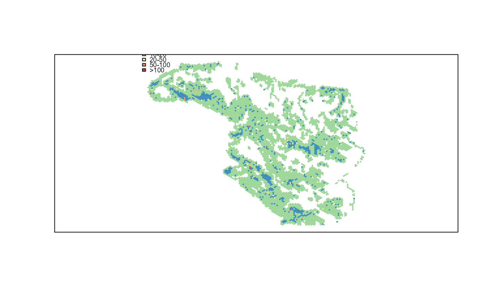

Uses row imputation to identify "k" ecological similar observations
similarity( x, k = 4, method = "mahalanobis", frequency = TRUE, scale = TRUE, ID = NULL )
| x | data.frame containing ecological measures |
|---|---|
| k | Number of k nearest neighbors (kNN) |
| method | Method to compute multivariate distances c("mahalanobis", "raw", "euclidean", "ica") |
| frequency | Calculate frequency of each reference row (TRUE/FALSE) |
| scale | Scale multivariate distances to standard range (TRUE/FALSE) |
| ID | Unique ID vector to use as reference ID's (rownames). Must be unique and same length as number of rows in x |
data.frame with k similar targets and associated distances. If frequency = TRUE the freq column represents the number of times a row (ID) was selected as a neighbor.
This function uses row-based imputation to identify k similar neighbors for each observation. Has been used to identify offsets based on ecological similarity.
Evans, J.S., S.R. Schill, G.T. Raber (2015) A Systematic Framework for Spatial Conservation Planning and Ecological Priority Design in St. Lucia, Eastern Caribbean. Chapter 26 in Central American Biodiversity : Conservation, Ecology and a Sustainable Future. F. Huettman (eds). Springer, NY.
Jeffrey S. Evans <jeffrey_evans@tnc.org>
library(sp) data(pu) kNN <- similarity(pu@data[2:ncol(pu)], k = 4, frequency = FALSE, ID = pu@data$UNIT_ID)#> Error in similarity(pu@data[2:ncol(pu)], k = 4, frequency = FALSE, ID = pu@data$UNIT_ID): please install yaImpute package before running this function#> Error in similarity(pu@data[2:ncol(pu)], k = 4, frequency = TRUE, ID = pu@data$UNIT_ID): please install yaImpute package before running this functionp <- kNN$freq#> Error in eval(expr, envir, enclos): object 'kNN' not foundclr <- c("#3288BD", "#99D594", "#E6F598", "#FEE08B", "#FC8D59", "#D53E4F") p <- ifelse(p <= 0, clr[1], ifelse(p > 0 & p < 10, clr[2], ifelse(p >= 10 & p < 20, clr[3], ifelse(p >= 20 & p < 50, clr[4], ifelse(p >= 50 & p < 100, clr[5], ifelse(p >= 100, clr[6], NA))))))#> Error in ifelse(p <= 0, clr[1], ifelse(p > 0 & p < 10, clr[2], ifelse(p >= 10 & p < 20, clr[3], ifelse(p >= 20 & p < 50, clr[4], ifelse(p >= 50 & p < 100, clr[5], ifelse(p >= 100, clr[6], NA)))))): object 'p' not found#> Error in plot.SpatialPolygons(x, ...): object 'p' not foundlegend("topleft", legend=c("None","<10","10-20", "20-50","50-100",">100"), fill=clr, cex=0.6, bty="n")# }